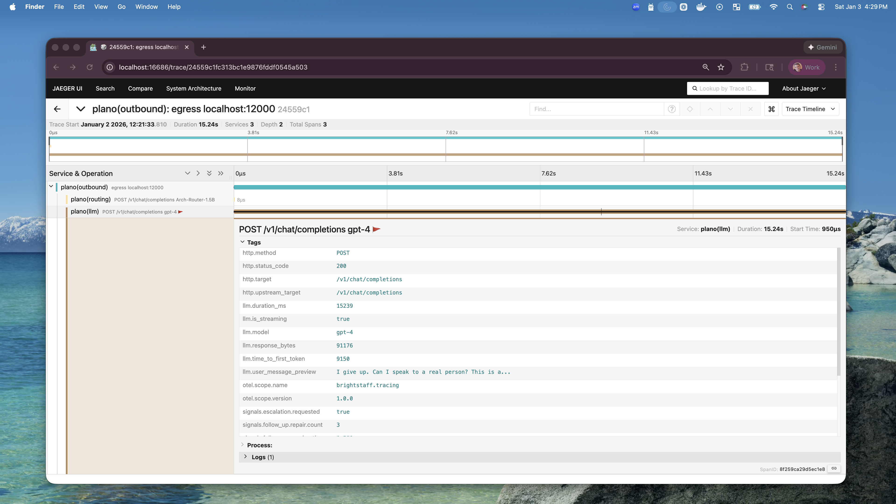

Signals™
Agentic Signals are lightweight, model-free behavioral indicators computed from live interaction trajectories and attached to your existing OpenTelemetry traces. They are the instrumentation layer of a closed-loop improvement flywheel for agents — turning raw production traffic into prioritized data that can drive prompt, routing, and model updates without running an LLM-as-judge on every session.
The framework implemented here follows the taxonomy and detector design in Signals: Trajectory Sampling and Triage for Agentic Interactions (Chen et al., 2026). All detectors are computed without model calls; the entire pipeline attaches structured attributes and span events to existing spans so your dashboards and alerts work unmodified.
Why Signals Matter: The Improvement Flywheel
Agentic applications are increasingly deployed at scale, yet improving them after deployment remains difficult. Production trajectories are long, numerous, and non-deterministic, making exhaustive human review infeasible and auxiliary LLM evaluation expensive. As a result, teams face a bottleneck: they cannot score every response, inspect every trace, or reliably identify which failures and successes should inform the next model update. Without a low-cost triage layer, the feedback loop from production behavior to model improvement remains incomplete.
Signals close this loop by cheaply identifying which interactions among millions are worth inspecting:
Instrument. Live trajectories are scored with model-free signals attached as structured attributes on existing OpenTelemetry spans, organized under a fixed taxonomy of interaction, execution, and environment signals. This requires no additional model calls, infrastructure, or changes to online agent behavior.
Sample & triage. Signal attributes act as filters: they surface severe failures, retrieve representative exemplars, and exclude the uninformative middle. In our experiments, signal-based sampling achieves 82% informativeness on \(\tau\)-bench, compared with 54% for random sampling, yielding a 1.52× efficiency gain per informative trajectory.
Data Construction. The triaged subset becomes targeted input for constructing preference datasets or supervised fine-tuning datasets from production trajectories.
Model Optimization. The resulting preference or supervised fine-tuning data is used to update the model through methods such as DPO, RLHF, or supervised fine-tuning, so optimization is driven by targeted production behavior rather than undifferentiated trace noise.
Deploy. The improved model is deployed and immediately re-instrumented with the same signals, enabling teams to measure whether the change improved production behavior and to feed the next iteration.
This loop depends on the first step being nearly free. The framework is therefore designed around fixed-taxonomy, model-free detectors with \(O(\text{messages})\) cost, no online behavior change, and no dependence on expensive evaluator models. By making production traces searchable and sampleable at scale, signals turn raw agent telemetry into a practical model-optimization flywheel.
What Are Behavioral Signals?
Behavioral signals are canaries in the coal mine — early, objective indicators that something may have gone wrong (or gone exceptionally well). They don’t explain why an agent failed, but they reliably signal where attention is needed.
These signals emerge naturally from the rhythm of interaction:
A user rephrasing or correcting the same request
Sharp increases in conversation length
Negative stance markers (“this doesn’t work”, ALL CAPS, excessive !!! or ???)
Agent repetition or tool-call loops
Expressions of gratitude, confirmation, or task success
Requests for a human agent or explicit quit intent
Tool errors, timeouts, rate limits, and context-window exhaustion
Individually, these clues are shallow; together, they form a fingerprint of agent performance. Embedded directly into traces, they make it easy to spot friction as it happens: where users struggle, where agents loop, where tool failures cluster, and where escalations occur.
Signal Taxonomy
Signals are organized into three top-level layers, each with its own intent. Every detected signal belongs to exactly one leaf type under one of seven categories. The per-category summaries and leaf-type descriptions below are borrowed verbatim from the reference implementation at katanemo/signals to keep the documentation and the detector contract in sync.
Interaction — user ↔ agent conversational quality
Misalignment — Misalignment signals capture semantic or intent mismatch between the user and the agent, such as rephrasing, corrections, clarifications, and restated constraints. These signals do not assert that either party is “wrong”; they only indicate that shared understanding has not yet been established.
Leaf signal type |
Description |
|---|---|
|
Explicit corrections, negations, mistake acknowledgments. |
|
Rephrasing indicators, alternative explanations. |
|
Confusion expressions, requests for clarification. |
Stagnation — Stagnation signals capture cases where the discourse continues but fails to make visible progress. This includes near-duplicate assistant responses, circular explanations, repeated scaffolding, and other forms of linguistic degeneration.
Leaf signal type |
Description |
|---|---|
|
Excessive turn count, conversation not progressing efficiently. |
|
Near-duplicate or repetitive assistant responses. |
Disengagement — Disengagement signals mark the withdrawal of cooperative intent from the interaction. These include explicit requests to exit the agent flow (e.g., “talk to a human”), strong negative stances, and abandonment markers.
Leaf signal type |
Description |
|---|---|
|
Requests for human agent or support. |
|
Notification to quit or leave. |
|
Complaints, frustration, negative sentiment. |
Satisfaction — Satisfaction signals indicate explicit stabilization and completion of the interaction. These include expressions of gratitude, success confirmations, and closing utterances. We use these signals to sample exemplar traces rather than to assign quality scores.
Leaf signal type |
Description |
|---|---|
|
Expressions of thanks and appreciation. |
|
Explicit satisfaction expressions. |
|
Confirmation of task completion or understanding. |
Execution — agent-caused action quality
Failure — Detects agent-caused failures in tool/function usage. These
are issues the agent is responsible for (as opposed to environment failures
which are external system issues). Requires tool-call traces
(function_call / observation) to fire.
Leaf signal type |
Description |
|---|---|
|
Wrong type, missing required field. |
|
Empty results due to overly narrow/wrong query. |
|
Agent called non-existent tool. |
|
Agent didn’t pass credentials correctly. |
|
Tool called in wrong state/order. |
Loops — Detects behavioral patterns where the agent gets stuck
repeating tool calls. These are distinct from
interaction.stagnation (conversation text repetition) and
execution.failure (single tool errors) — these detect tool-level
behavioral loops.
Leaf signal type |
Description |
|---|---|
|
Same tool with identical args ≥3 times. |
|
Same tool with varied args ≥3 times. |
|
Multi-tool A→B→A→B pattern ≥3 cycles. |
Environment — external system / boundary conditions
Exhaustion — Detects failures and constraints arising from the surrounding system rather than the agent’s internal policy or reasoning. These are external issues the agent cannot control.
Leaf signal type |
Description |
|---|---|
|
5xx errors, service unavailable. |
|
Connection/read timeouts. |
|
429, quota exceeded. |
|
Connection refused, DNS errors. |
|
Invalid JSON, unexpected schema. |
|
Token/context limit exceeded. |
How It Works
Signals are computed automatically by the gateway after each assistant response and emitted as OpenTelemetry trace attributes and span events on your existing spans. No additional libraries or instrumentation are required — just configure your OTEL collector endpoint as usual.
Each conversation trace is enriched with layered signal attributes (category-level counts and severities) plus one span event per detected signal instance (with confidence, snippet, and per-detector metadata).
Note
Signal analysis is enabled by default and runs on the request path. It
does not affect the response sent to the client. Set
overrides.disable_signals: true in your Plano config to skip this
CPU-heavy analysis (see the configuration reference).
OTel Span Attributes
Signal data is exported as structured OTel attributes. There are two tiers: top-level attributes (always emitted on spans that carry signal analysis) and layered attributes (emitted only when the corresponding category has at least one signal instance).
Top-level attributes
Always emitted once signals are computed.
Attribute |
Type |
Value |
|---|---|---|
|
string |
One of |
|
float |
Numeric score 0.0 – 100.0 that feeds the quality bucket. |
|
int |
Total number of user + assistant turns in the interaction. |
|
float |
Efficiency metric 0.0 – 1.0 (stays at 1.0 up to baseline turns,
then decays: |
Layered attributes
Emitted per category, only when count > 0. One .count and one
.severity attribute per category. Severity is a 0–3 bucket (see
Severity levels below).
Attribute (emitted when fired) |
Source |
|---|---|
|
Any |
|
“ |
|
Any |
|
“ |
|
Any |
|
“ |
|
Any |
|
“ |
|
Any |
|
“ |
|
Any |
|
“ |
|
Any |
|
“ |
Legacy attributes (deprecated, still emitted)
The following aggregate keys pre-date the paper taxonomy and are still emitted for one release so existing dashboards keep working. They are derived from the layered counts above and will be removed in a future release. Migrate to the layered keys when convenient.
Legacy attribute |
Layered equivalent |
|---|---|
|
|
|
(computed: |
|
Count of |
|
Derived severity bucket of the above |
|
|
|
True if any |
|
|
Span Events
In addition to span attributes, every detected signal instance is emitted as
a span event named signal.<dotted-type> (e.g.
signal.interaction.satisfaction.gratitude). Each event carries:
Event attribute |
Type |
Description |
|---|---|---|
|
string |
Full dotted signal type (same as the event name suffix). |
|
int |
Zero-based index of the message that triggered the signal. |
|
float |
Detector confidence in [0.0, 1.0]. |
|
string |
Matched substring from the source message (when available). |
|
string (JSON) |
Per-detector metadata (pattern name, ratio values, etc.). |
Span events are the right surface for drill-down: attribute filters narrow traces, then events tell you which messages fired which signals with what evidence.
Visual Flag Marker
When concerning signals are detected (disengagement present, stagnation
count > 2, any execution failure / loop, or overall quality poor/
severe), the marker 🚩 (U+1F6A9) is appended to the span’s operation
name.
This makes flagged sessions immediately visible in trace UIs without
requiring attribute filtering.
Querying in Your Observability Platform
Example queries against the layered keys:
signals.quality = "severe"
signals.turn_count > 10
signals.efficiency_score < 0.5
signals.interaction.disengagement.severity >= 2
signals.interaction.misalignment.count > 3
signals.interaction.satisfaction.count > 0 AND signals.quality = "good"
signals.execution.failure.count > 0
signals.environment.exhaustion.count > 0
For flagged sessions, search for 🚩 in span names.
{kind=link}

Severity Levels
Every category aggregates its leaf signal counts into a severity bucket used
by both the layered .severity attribute and the overall quality score.
None (0): 0 instances
Mild (1): 1–2 instances
Moderate (2): 3–4 instances
Severe (3): 5+ instances
Severity is always computed per-category. For example, three instances of
misalignment.rephrase plus two of misalignment.correction yield
signals.interaction.misalignment.severity = 3 (5 instances total).
Overall Quality Assessment
Signals are aggregated into an overall interaction quality on a 5-point scale. The scoring model starts at 50.0 (neutral), adds positive weight for satisfaction, and subtracts weight for disengagement, misalignment (when ratio > 30% of user turns), stagnation (when count > 2), execution failures, execution loops, and environment exhaustion.
The resulting numeric score maps to the bucket emitted in signals.quality:
- Excellent (75 – 100)
Strong positive signals, efficient resolution, low friction.
- Good (60 – 74)
Mostly positive with minor clarifications; some back-and-forth but successful.
- Neutral (40 – 59)
Mixed signals; neither clearly good nor bad.
- Poor (25 – 39)
Concerning negative patterns (high friction, multiple misalignments, moderate disengagement, tool failures). High abandonment risk.
- Severe (0 – 24)
Critical issues — escalation requested, severe disengagement, severe stagnation, or compounding failures. Requires immediate attention.
The raw numeric score is available under signals.quality_score.
Sampling and Prioritization
In production, trace data is overwhelming. Signals provide a lightweight first layer of triage to select the small fraction of trajectories that are most likely to be informative. Per the paper, signal-based sampling reaches 82% informativeness on τ-bench versus 54% for random sampling — a 1.52× efficiency gain per informative trajectory.
Workflow:
Gateway captures conversation messages and computes signals
Signal attributes and per-instance events are emitted to OTEL spans
Your observability platform ingests and indexes the attributes
Query / filter by signal attributes to surface outliers and exemplars
Review high-information traces to identify improvement opportunities
Update prompts, routing, or policies based on findings
Redeploy and monitor signal metrics to validate improvements
This creates a reinforcement loop where traces become both diagnostic data and training signal for prompt engineering, routing policies, and preference-data construction.
Note
An in-gateway triage sampler that selects informative trajectories inline — with configurable per-category weights and budgets — is planned as a follow-up to this release. Today, sampling is consumer-side: your observability platform filters on the signal attributes described above.
Example Span
A concerning session, showing both layered attributes and a per-instance event:
# Span name: "POST /v1/chat/completions gpt-5.2 🚩"
# Top-level
signals.quality = "severe"
signals.quality_score = 0.0
signals.turn_count = 4
signals.efficiency_score = 1.0
# Layered (only non-zero categories are emitted)
signals.interaction.disengagement.count = 6
signals.interaction.disengagement.severity = 3
# Legacy (deprecated, emitted while dual-emit is on)
signals.frustration.count = 4
signals.frustration.severity = 2
signals.escalation.requested = true
# Per-instance span events
event: signal.interaction.disengagement.escalation
signal.type = "interaction.disengagement.escalation"
signal.message_index = 6
signal.confidence = 1.0
signal.snippet = "get me a human"
signal.metadata = {"pattern_type":"escalation"}
Building Dashboards
Use signal attributes to build monitoring dashboards in Grafana, Honeycomb, Datadog, etc. Prefer the layered keys — they align with the paper taxonomy and will outlive the legacy keys.
Quality distribution: Count of traces by
signals.qualityP95 turn count: 95th percentile of
signals.turn_countAverage efficiency: Mean of
signals.efficiency_scoreHigh misalignment rate: Percentage where
signals.interaction.misalignment.count > 3Disengagement rate: Percentage where
signals.interaction.disengagement.severity >= 2Satisfaction rate: Percentage where
signals.interaction.satisfaction.count >= 1Escalation rate: Percentage where a
disengagement.escalationordisengagement.quitevent fired (via span-event filter)Tool-failure rate: Percentage where
signals.execution.failure.count > 0Environment issue rate: Percentage where
signals.environment.exhaustion.count > 0
Creating Alerts
Set up alerts based on signal thresholds:
Alert when
signals.quality = "severe"count exceeds threshold in a 1-hour windowAlert on sudden spike in
signals.interaction.disengagement.severity >= 2(>2× baseline)Alert on sustained
signals.execution.failure.count > 0— agent-caused tool issuesAlert on spikes in
signals.environment.exhaustion.count— external system degradationAlert on degraded efficiency (P95
signals.turn_countup > 50%)
Best Practices
Start simple:
Alert or page on
severesessions (or on spikes insevererate)Review
poorsessions within 24 hoursSample
excellentsessions as exemplars
Combine multiple signals to infer failure modes:
Silent loop:
signals.interaction.stagnation.severity >= 2+signals.turn_countabove baselineUser giving up:
signals.interaction.disengagement.severity >= 2+ any escalation eventMisunderstood intent:
signals.interaction.misalignment.count / user_turns > 0.3Agent-caused friction:
signals.execution.failure.count > 0+signals.interaction.misalignment.count > 0External degradation, not agent fault:
signals.environment.exhaustion.count > 0whilesignals.execution.failure.count = 0Working well:
signals.interaction.satisfaction.count >= 1+signals.efficiency_score > 0.8+ no disengagement
Limitations and Considerations
Signals don’t capture:
Task completion / real outcomes
Factual or domain correctness
Silent abandonment (user leaves without expressing frustration)
Non-English nuance (pattern libraries are English-oriented)
Mitigation strategies:
Periodically sample flagged sessions and measure false positives / negatives
Tune baselines per use case and user population
Add domain-specific phrase libraries where needed
Combine signals with non-text metrics (tool failures, disconnects, latency)
Note
Behavioral signals complement — but do not replace — domain-specific response quality evaluation. Use signals to prioritize which traces to inspect, then apply domain expertise and outcome checks to diagnose root causes.
Tip
The 🚩 marker in the span name provides instant visual feedback in
trace UIs, while the structured attributes (signals.quality,
signals.interaction.disengagement.severity, etc.) and per-instance
span events enable powerful querying and drill-down in your observability
platform.
See Also
Signals: Trajectory Sampling and Triage for Agentic Interactions — the paper this framework implements
Tracing — Distributed tracing for agent systems
Monitoring — Metrics and dashboards
Access Logging — Request / response logging
Observability — Complete observability guide